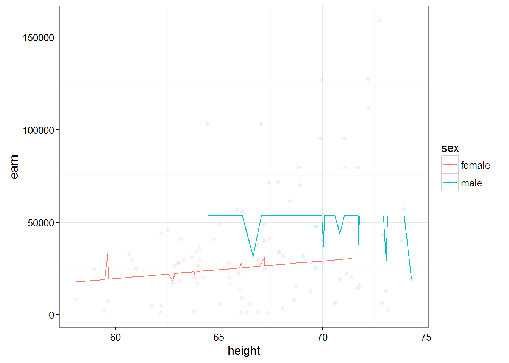

Multiple regression modelling
## # A tibble: 1,379 × 6
## earn height sex race ed age
## <dbl> <dbl> <chr> <chr> <int> <int>
## 1 79571.30 73.89 male white 16 49
## 2 96396.99 66.23 female white 16 62
## 3 48710.67 63.77 female white 16 33
## 4 80478.10 63.22 female other 16 95
## 5 82089.35 63.08 female white 17 43
## 6 15313.35 64.53 female white 15 30
## 7 47104.17 61.54 female white 12 53
## 8 50960.05 73.29 male white 17 50
## 9 3212.65 72.24 male hispanic 15 25
## 10 42996.64 72.40 male white 12 30
## # ... with 1,369 more rows## # A tibble: 48 × 5
## state abbr low murder tc2009
## <chr> <chr> <int> <dbl> <dbl>
## 1 Alabama AL -27 7.1 4337.5
## 2 Alaska AK -80 3.2 3567.1
## 3 Arizona AZ -40 5.5 3725.2
## 4 Arkansas AR -29 6.3 4415.4
## 5 California CA -45 5.4 3201.6
## 6 Colorado CO -61 3.2 3024.5
## 7 Connecticut CT -32 3.0 2646.3
## 8 Delaware DE -17 4.6 3996.8
## 9 Florida FL -2 5.5 4453.7
## 10 Georgia GA -17 6.0 4180.6
## # ... with 38 more rows## tc2009 ~ low## [1] "formula"Multiple comparison
To this end, we built models using only numerical variables. Let us remember that we have categorical values called R factors, and consider the following example:
rmod <- lm(earn ~ race, data = wages)
coef(rmod)## (Intercept) racehispanic raceother racewhite
## 28372.094 -2886.791 3905.320 4993.330We tried to posterity linear model based on earnings from the race. If we look at the coefficients, the result is quite unexpected. First, it was calculated the coefficients for each level of the factor, and secondly, we are not all the levels like we don’t have a ratio for the level “black”.
The fact that one of the levels variable is chosen as the base. Each subsequent level gets a room in a gradation and it rasshiryaetsya separate factor that shows how its coefficient differs from the base.
Because we have not seen the coefficient for the black population, so it is a base, i.e. 28372.09. For Hispanics, the final ratio will be 28372.09 + -2886.79 = 25485.30. And for the white population 28372.09 + 4993.33 = 33365.42
Because the final figure for Hispanics is the lowest it would be logical to make it a basic level. You can do this by changing the order of levels of factors:
wages$race <- factor(wages$race,
levels = c("hispanic", "white", "black", "other"))
rmod2 <- lm(earn ~ race, data = wages)
coef(rmod2)## (Intercept) racewhite raceblack raceother
## 25485.303 7880.121 2886.791 6792.111It is easy to notice that despite the fact that the values of the coefficients have changed, their resulting values remained the same.
ANOVA
Let’s again refer to your knowledge on statistics and sadomania, but what regressionis similar analysis for categorical variables? In fact it is we are trying to compare the differences between a great unifying force and its individual subgroups, which is very similar to analysis of variance (ANOVA - Analysis of Variance). It really is so we can use the data dispersionnogo analysis, using the command anova() on our model.
anova(rmod2)## Analysis of Variance Table
##
## Response: earn
## Df Sum Sq Mean Sq F value Pr(>F)
## race 3 6.7924e+09 2264121503 2.3241 0.07328 .
## Residuals 1375 1.3395e+12 974196170
## ---
## Signif. codes: 0 '***' 0.001 '**' 0.01 '*' 0.05 '.' 0.1 ' ' 1In addition to the ANOVA, there are many similar tests you can use, too:
| Function | Test | Statistics |
|---|---|---|
| lm | ANOVA | mean |
| aov | ANOVA | mean |
| anova | ANOVA | mean |
| oneway.test | ANOVA for different dispersion | average |
| pairwise.t.test | t-test mnojestva groups | average |
| kruskal.test | Kruskal Wallis Rank Sum | amount |
| friedman.test | Friedman Rank Sum | amount |
| fligner.test | Fligner-Killeen | dispersion |
| bartlett.test | test Bartlett | dispersion |
Let’s look at the dependence of the earnings from the floor. And whether there is a statistically significant difference between the salaries of men and women
smod <- lm(earn ~ sex, data = wages)
coef(smod)## (Intercept) sexmale
## 24245.65 21747.48wages$sex <- factor(wages$sex,
levels = c("male", "female"))
smod <- lm(earn ~ sex, data = wages)
coef(smod)## (Intercept) sexfemale
## 45993.13 -21747.48So, if we take male wages as the base, it will be 45993, and the female will be less on her 21747. The difference was enormous, so let’s check how these data statisticheski reliable:
anova(smod)## Analysis of Variance Table
##
## Response: earn
## Df Sum Sq Mean Sq F value Pr(>F)
## sex 1 1.5320e+11 1.5320e+11 176.81 < 2.2e-16 ***
## Residuals 1377 1.1931e+12 8.6646e+08
## ---
## Signif. codes: 0 '***' 0.001 '**' 0.01 '*' 0.05 '.' 0.1 ' ' 1Pr(>F) < 2.2 e-16 *** tells us that the probability of the null hypothesis equal to zero, and thus designed our model a huge difference is statistically significant. Histogram of salaries reassures us that:
qplot(earn, data = wages, geom = "density", color = sex) + theme_bw()Having constructed a similar chart for the various races we can notice that the difference between races are not so fundamental:
qplot(earn, data = wages, geom = "density", color = race) + theme_bw()Estimation of functions of several variables
To this end, we examined the dependence of one variable from only one another. Yet, R allows to find the dependence on an unlimited number of variables. For example build a model based on earnings growth
m1 <- lm(earn ~ height, data = wages)
coef(m1)## (Intercept) height
## -126523.359 2387.196And here is the following code allows us to describe the dependence of earnings on age and gender.
m2 <- lm(earn ~ height + sex, data = wages)
coef(m2)## (Intercept) height sexfemale
## -15605.703 879.424 -16874.158The second factor can be interpreted as the effect of the presence of female …when growth is considered unchanged. The first factor can be interpreted as changes in earnings depending on the growth …provided that the floor unchanged.
The following chart shows two models - based on earnings growth for men and women
qplot(height, earn, data = wages, alpha = I(1/10), color = sex) + theme_bw() + geom_line(aes(y = predict(m2)))
Thus adding additional peremennye essentially caused the ruin of our model.
Refer to the set of the diamond and look at the influence of type of cutting (cut) and the number of carats in a diamond on its value:
qplot(price, data = diamonds, color = cut, geom = "density")Lets construct two models, with and without consideration of the weight of diamond in carats:
diamonds$cut <- as.character(diamonds$cut)
d1 <- lm(price ~ cut, data = diamonds)
coef(d1)## (Intercept) cutGood cutIdeal cutPremium cutVery Good
## 4358.7578 -429.8933 -901.2158 225.4999 -376.9979d2 <- lm(price ~ cut + carat, data = diamonds)
coef(d2)## (Intercept) cutGood cutIdeal cutPremium cutVery Good
## -3875.470 1120.332 1800.924 1439.077 1510.135
## carat
## 7871.082If we look at the data model does not account for the weight of a diamond, we will see a strange picture, when the value of a diamond with the perfect agranco much less than that of a diamond with good and very good cut. But if you consider the weight (and therefore size) of the diamond, then everything falls into place. Diamonds with ideal avrankou in this model are more expensive, but given their “carat”.
Described above is perfectly visible in the following graph:
qplot(carat, predict(d2), data = diamonds, color = cut, geom = "line")A similar effect of the introduction of the additional variable is widely known and even has its own name - the paradox Simpson
Its essence lies in the fact that the relationship between two variables can change if to consider a third, related variable.
Since this problem is well known, there is a standard solution:
Model each source of variation in the system at the same time
Create a new model that predicts earnings depending on the growth, sex, race, education and age.And try to answer the question is there a relationship between height and income? And between the floor and the earnings?
m3 <- lm(earn ~ height + sex + race + ed + age, data = wages)
coef(m3)## (Intercept) height sexfemale racewhite raceblack raceother
## -74354.1693 632.7391 -17552.5441 4592.7865 2086.0663 1708.3196
## ed age
## 4382.0853 287.4744Symbol . is used in the formula, as a symbol of all the other variables. I.e. we can describe the same model using the code:
lm(earn ~ height + sex + race + ed + age, data = wages)##
## Call:
## lm(formula = earn ~ height + sex + race + ed + age, data = wages)
##
## Coefficients:
## (Intercept) height sexfemale racewhite raceblack
## -74354.2 632.7 -17552.5 4592.8 2086.1
## raceother ed age
## 1708.3 4382.1 287.5lm(earn ~ ., data = wages)##
## Call:
## lm(formula = earn ~ ., data = wages)
##
## Coefficients:
## (Intercept) height sexfemale racewhite raceblack
## -74354.2 632.7 -17552.5 4592.8 2086.1
## raceother ed age
## 1708.3 4382.1 287.5Such a recording, with the use of the mark . you can modify it taking away from the individual variables:
lm(earn ~ height + sex + race + ed, data = wages)##
## Call:
## lm(formula = earn ~ height + sex + race + ed, data = wages)
##
## Coefficients:
## (Intercept) height sexfemale racewhite raceblack
## -46648.9 440.6 -18036.5 6128.5 2915.6
## raceother ed
## 3379.3 4159.8lm(earn ~ . - age, data = wages)##
## Call:
## lm(formula = earn ~ . - age, data = wages)
##
## Coefficients:
## (Intercept) height sexfemale racewhite raceblack
## -46648.9 440.6 -18036.5 6128.5 2915.6
## raceother ed
## 3379.3 4159.8Interaction terms between variables
We proceeded from the fact that each of the independent variables does not affect the other. What, for example is obviously not true for gender and height because the average height of women is less. In order for R to take into account when modeling the interaction of the independent variables, we will have to add to the formula another variable, which describes the interaction of these variables among themselves. So for the above height and gender, the resulting model formula will look like this:
m4 <- lm(earn ~ height + sex + height:sex, data = wages)
coef(m4)## (Intercept) height sexfemale height:sexfemale
## -42677.4003 1265.9167 30510.4336 -701.4065What is the meaning of the coefficients? To men height increase of 1 inch will result in increased earnings for 1265.92. For women the increase 1 inch will increase the earnings on 1265.92 + (-701.41) = 564.51.
If we build two graphs of the predictions of the two models, we can see that the model taking into account the direct semiadalia variables for men and women ceased to be parallel. Which means, cosmelenia in the growth of men and women will lead to different growth of wages.
qplot(height, earn, data = wages, alpha = I(1/10), color = sex) + theme_bw() + geom_line(aes(y = predict(lm(earn ~ height + sex, data = wages))))qplot(height, earn, data = wages, alpha = I(1/10), color = sex) + theme_bw() + geom_line(aes(y = predict(m4)))Thus, the function of the form
lm(earn ~ height + sex + height:sex, data = wages)##
## Call:
## lm(formula = earn ~ height + sex + height:sex, data = wages)
##
## Coefficients:
## (Intercept) height sexfemale height:sexfemale
## -42677.4 1265.9 30510.4 -701.4will predict the value of earnings value of growth…given the importance of sex …and taking into account the interaction between the variables height and gender
Important: the order of variables in the formula is of the utmost importance y~x+z and y~z+x are two different models
lm(earn ~ height * sex, data = wages)##
## Call:
## lm(formula = earn ~ height * sex, data = wages)
##
## Coefficients:
## (Intercept) height sexfemale height:sexfemale
## -42677.4 1265.9 30510.4 -701.4The * character is shorthand notation what we want to consider the impact of these two variables on the dependent variable and want to consider their interaction with each other.
The entry ^2 means that the model needs to take into account all interactions of first order(one-variable - +) and all interactions of second order (interaction of variables with each other - :)
lm(earn ~ height + sex + height:sex, data = w1)##
## Call:
## lm(formula = earn ~ height + sex + height:sex, data = w1)
##
## Coefficients:
## (Intercept) height sexmale height:sexmale
## -31845.8 868.3 139602.2 -1683.4lm(earn ~ height * sex, data = w1)##
## Call:
## lm(formula = earn ~ height * sex, data = w1)
##
## Coefficients:
## (Intercept) height sexmale height:sexmale
## -31845.8 868.3 139602.2 -1683.4lm(earn ~ (height + sex)^2, data = w1)##
## Call:
## lm(formula = earn ~ (height + sex)^2, data = w1)
##
## Coefficients:
## (Intercept) height sexmale height:sexmale
## -31845.8 868.3 139602.2 -1683.4If we want to consider a model with three independent variables,let’s add in our model Russ, we have poyavyatsya interactions and the third order - the height:sex:race
Then we can use the recording ^3, which would indicate that in the model it is necessary to use all interactions of the first, second and third order.
lm(earn ~ (height + sex + race)^3,data = w1)##
## Call:
## lm(formula = earn ~ (height + sex + race)^3, data = w1)
##
## Coefficients:
## (Intercept) height
## -166395 2944
## sexmale racehispanic
## 491439 183266
## raceother racewhite
## 385211 128984
## height:sexmale height:racehispanic
## -7062 -2437
## height:raceother height:racewhite
## -6064 -1993
## sexmale:racehispanic sexmale:raceother
## NA NA
## sexmale:racewhite height:sexmale:racehispanic
## -396323 NA
## height:sexmale:raceother height:sexmale:racewhite
## NA 6052qplot(height, earn, data = w1, alpha = I(1/10), color = sex) + theme_bw() + geom_line(aes(y = predict(lm(earn ~ (height + sex + race)^3,data = w1))))
Cheat sheet formulas modeling in R
- ‘~’ Separates dependent variables from independent variables from right to left. For example, the formula of dependence y from x, z, and w would look like y ~ x + z + w.
- ‘+’ Separates the independent variables.
- The ‘:’ denotes the interaction between the independent variables. Description y is a value dependent on x, z, and interactions between x and z will look like y ~ x + z + x:z.
- ’’ Short account of all possible interactions between variables. The code y ~ x z * w is equivalent to y ~ x + z + w + x:z + x:w + z:w + x:z:w.
- ‘^’ Denotes the interaction of a certain level. The code y ~ (x + z + w)^2 is equivalent to y ~ x + z + w + x:z + x:w + z:w.
- ‘.’ Brief notation indicating all other variables in the table except for the dependent variable. For example, if the table contains variables x, y, z, and w, then the code y ~ . is equivalent to y ~ x + z + w.
- The ‘-’ sign miinus removes a variable from the formula. For example, y ~ (x + z + w)^2 – x w equivalent to y ~ x + z + w + x:z + z:w.
- ‘-1’ Removes the first coefficient, causing the graph of the model function to pass through the origin .
- ‘I()’ Elements within the braces are interpreted numerically. For example, y ~ x + (z + w)^2 is equivalent to y ~ x + z + w + z:w. But, the code y ~ x + I((z + w)^2) is equivalent to y ~ x + h, where h is a new variable obtained by squaring the sum of z and w.
- ‘function’ is Any mathematical function can be used in the formula. For example, log(y) ~ x + z + w will attempt to describe the dependence of log(y) from x, z, and w.
Analysis of multiple regression models
All of the tasks that stood in front of us to analyze models of linear regressi relevant here. But for models in multiple regression there is another problem - the definition of otdelnoy contribution of each variable in the final model and conclusion about her need to stay in it.
Another problem, besides the fact that the variables that you added may slightly affect your model, is that if present in the model variables correlate, it can contribute to a strong error in their R-values.
In order to avoid such a situation known as multicollinearity, you will have to check the values of correlation for all of your variables
cor(wages$height, wages$ed)## [1] 0.1140473cor(wages$height, wages$age)## [1] -0.1337271cor(wages$height, as.numeric(wages$sex))## [1] -0.7036717If some of your variables are significantly correlated, then you need to choose one of them, abandoning the other.
In addition to these problems, models soerjadi many variables the problem then becomes that an increase in the number of variables increases the chance for some of the variables we polim inadequate R-value is simply the result of a failed sample.
For example, p-value < 0.05 will be every twentieth person among an infinite set of p-values, simply by the law of large numbers.
Then, the probability that at least one p-value < 0.05 = 0.05. The probability that at least one of the two p-values < 0.05 = 0.098. … … … The probability that at least one of the twenty p-values < 0.05 = 0.64
In order not to reject real impact on your model variables as a result of this effect, it is recommended to use one of the following approaches
- To use a lower α value to determine significance (for example equal to α / p)
- To check out first what the whole model is statistically significant and therefore make the decision to exclude one of the variables.
For example, for the model m4
summary(m4)##
## Call:
## lm(formula = earn ~ height + sex + height:sex, data = wages)
##
## Residuals:
## Min 1Q Median 3Q Max
## -49699 -20090 -5034 11553 271709
##
## Coefficients:
## Estimate Std. Error t value Pr(>|t|)
## (Intercept) -42677.4 30488.0 -1.400 0.16180
## height 1265.9 434.9 2.911 0.00366 **
## sexfemale 30510.4 39644.1 0.770 0.44166
## height:sexfemale -701.4 585.8 -1.197 0.23141
## ---
## Signif. codes: 0 '***' 0.001 '**' 0.01 '*' 0.05 '.' 0.1 ' ' 1
##
## Residual standard error: 29340 on 1375 degrees of freedom
## Multiple R-squared: 0.1205, Adjusted R-squared: 0.1186
## F-statistic: 62.82 on 3 and 1375 DF, p-value: < 2.2e-16R-value of the model will be less than 2.2 e-16, which means that your model significantly better predicts the value of a variable than completely arbitrary overkill.
To compare models you can use the functions anova()
anova(m1, m4)## Analysis of Variance Table
##
## Model 1: earn ~ height
## Model 2: earn ~ height + sex + height:sex
## Res.Df RSS Df Sum of Sq F Pr(>F)
## 1 1377 1.2318e+12
## 2 1375 1.1840e+12 2 4.7797e+10 27.753 1.528e-12 ***
## ---
## Signif. codes: 0 '***' 0.001 '**' 0.01 '*' 0.05 '.' 0.1 ' ' 1The findings indicate that the model m4 has a significant rasnz in the accuracy of predictions than model m1. In other words, because the difference between the models was the presence of the m4 model variable gender(sex), the inclusion of a gender variable in our model improves its accuracy, which means that the variable gender has a right to attend.
If we consider the data obtained from the function anova() for only one model m4, we see that
anova(m4)## Analysis of Variance Table
##
## Response: earn
## Df Sum Sq Mean Sq F value Pr(>F)
## height 1 1.1448e+11 1.1448e+11 132.9410 < 2.2e-16 ***
## sex 1 4.6562e+10 4.6562e+10 54.0720 3.307e-13 ***
## height:sex 1 1.2343e+09 1.2343e+09 1.4334 0.2314
## Residuals 1375 1.1840e+12 8.6112e+08
## ---
## Signif. codes: 0 '***' 0.001 '**' 0.01 '*' 0.05 '.' 0.1 ' ' 1p-value for the variable height:sex more marginal p-znaeniya, and therefore the model contains the variable heights + sex + heights:sex is not significantly better than the model containing the variables heights + sex, meaning of a variable height sex, we can refuse.
The final algorithm of the research model will be to obtain and interpret the following values
- The coefficients coef(mod)
- Balances - resid(mod)
- The confidence interval confint(mod)
- P-values - summary(mod)
- Comparison of variants model - anova(mod1, mod2)